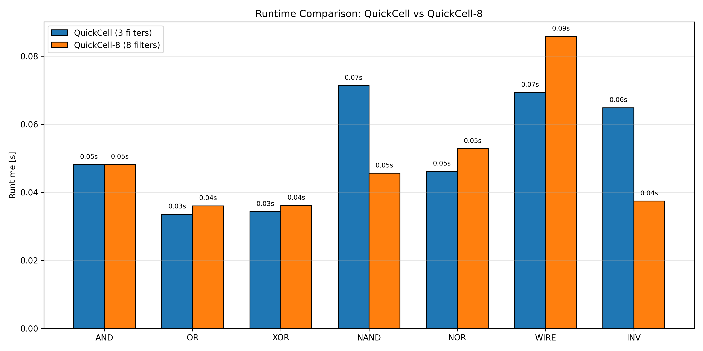
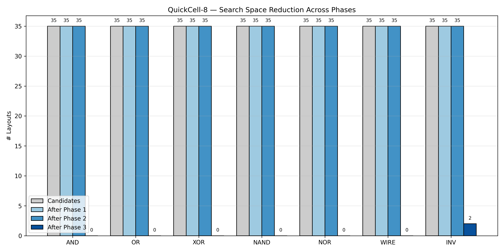
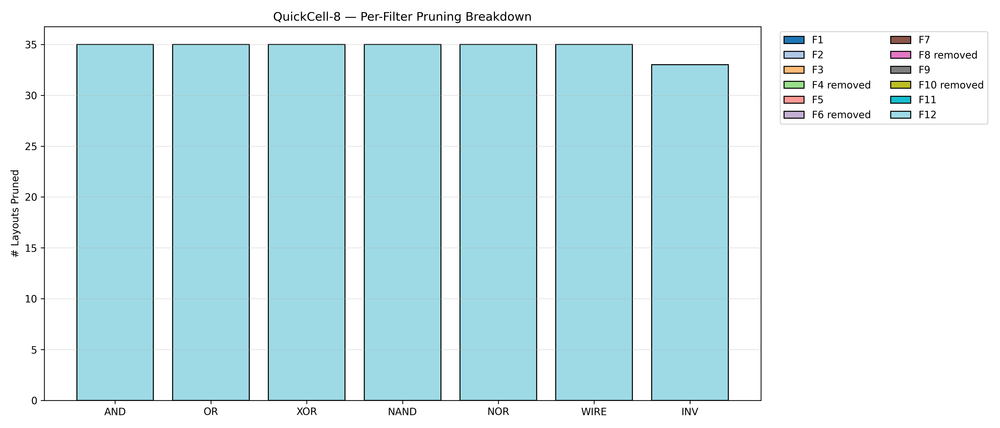

QuickCell vs QuickCell-8 Performance Report
QuickCell-8 definition:
This version uses 8 filters. F4, F6, F8, and F10 are removed because they caused
over-pruning in the current toy benchmark.
Important:
This is still a debugging-scale benchmark with only 35 layouts.
If |L*| remains zero, the issue is most likely the toy geometry/model,
not only the pruning filters. For final paper-level results, use a calibrated
SiDB geometry and an exact physical simulator.
1. Headline Results
| Function |
|Ld| |
P1 |
P2 |
P3 |
|L*| 3-f |
t3 |
|L*| 8-f |
t8 |
Speedup |
| AND |
35 |
35 |
35 |
0 |
0 |
0.0481s |
0 |
0.0481s |
1.00× |
| OR |
35 |
35 |
35 |
0 |
0 |
0.0335s |
0 |
0.0360s |
0.93× |
| XOR |
35 |
35 |
35 |
0 |
0 |
0.0343s |
0 |
0.0361s |
0.95× |
| NAND |
35 |
35 |
35 |
0 |
0 |
0.0713s |
0 |
0.0456s |
1.57× |
| NOR |
35 |
35 |
35 |
0 |
0 |
0.0462s |
0 |
0.0528s |
0.87× |
| WIRE |
35 |
35 |
35 |
0 |
0 |
0.0693s |
0 |
0.0858s |
0.81× |
| INV |
35 |
35 |
35 |
2 |
2 |
0.0648s |
2 |
0.0374s |
1.73× |
2. Per-Filter Breakdown
| Function |
F1 | F2 | F3 | F4 | F5 |
F6 | F7 | F8 | F9 |
F10 | F11 | F12 |
| AND | 0 | 0 | 0 | REM | 0 | REM | 0 | REM | 0 | REM | 0 | 35 |
| OR | 0 | 0 | 0 | REM | 0 | REM | 0 | REM | 0 | REM | 0 | 35 |
| XOR | 0 | 0 | 0 | REM | 0 | REM | 0 | REM | 0 | REM | 0 | 35 |
| NAND | 0 | 0 | 0 | REM | 0 | REM | 0 | REM | 0 | REM | 0 | 35 |
| NOR | 0 | 0 | 0 | REM | 0 | REM | 0 | REM | 0 | REM | 0 | 35 |
| WIRE | 0 | 0 | 0 | REM | 0 | REM | 0 | REM | 0 | REM | 0 | 35 |
| INV | 0 | 0 | 0 | REM | 0 | REM | 0 | REM | 0 | REM | 0 | 33 |
3. Runtime Comparison

4. Search Space Reduction

5. Filter Breakdown

6. Correct Interpretation
- QuickCell original uses 3 filters: F4, F11, and F12.
- QuickCell-8 uses 8 filters: F1, F2, F3, F5, F7, F9, F11, and F12.
- F4, F6, F8, and F10 are intentionally removed in this debugging version.
- If no valid implementation is found, the toy layout is not physically suitable for the target function.
- The observed speedup is a debugging/runtime effect and should not be interpreted as final scalability evidence.